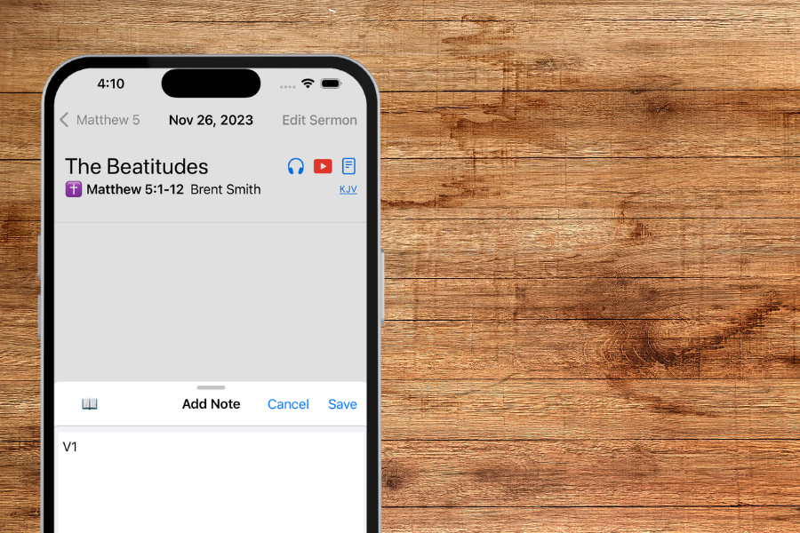
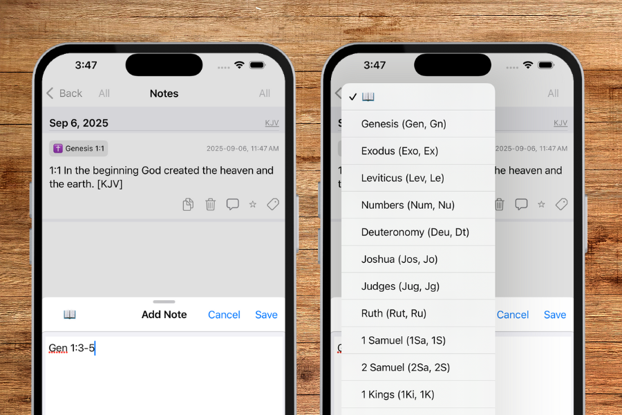
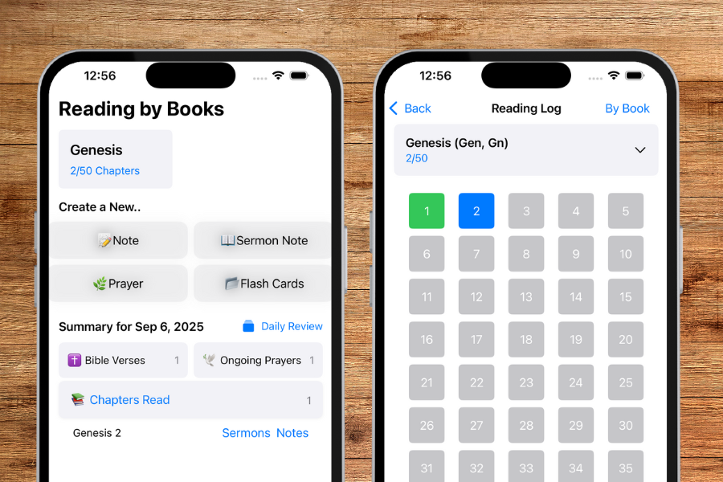

iOS App
撒上 7:12
在 iPhone 上，把讲道、祷告和经文记下来——趁印象还在。

堂上讲，台下记。笔记和经节、讲章连在一起，过后还能找回来。

拍下投影或讲义上的经文，识别后填入笔记，少打字。

章讲进行中，打「V5」加上你的想法，就链到那一节。
Web
网页版章节研读还在准备中。登录账号后，笔记可在设备间同步。
Thus far the LORD has helped us. — 1 Samuel 7:12